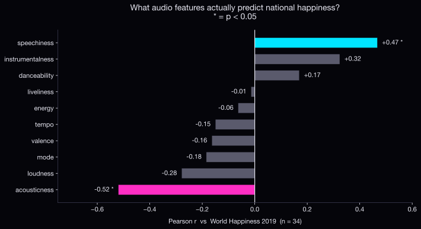

A nation's playlist as its therapy bill.
guess who's happier?Does what a country streams say anything about how its people feel? Yes — but not in the way you'd expect. We took 170,614 chart entries from Spotify's Daily Top-200 across 34 countries (2017–2020) and lined them up against the World Happiness Report 2019 ladder score. The obvious test — happy countries listen to happy music — failed in a sharp, specific direction. What follows is six rooms of evidence, one inversion, and a metaphor about what a nation's playlist actually records.
The World Happiness Report 2019 measures wellbeing the slow way: it asks people directly. Spotify records what those same people listen to when nobody's asking. Two windows on the same society — one curated, one unguarded. If both windows show the same view, music tells you the same thing the survey does. If they don't, the disagreement is the story.
We wrote down a simple guess: happy countries listen to happy music. Spotify gives every track a "valence" score — its measure of how positive a song sounds, major-key, upbeat, cheerful. It's the obvious place to look. We chased it, and it left us empty-handed. But on the way past, we found something else.
Every Spotify track has two numbers attached: valence (how positive it sounds) and energy (how intense it sounds). Take a country's average of each, divide one by the other. That's its coping ratio.
+ 0.01 PREVENTS DIVIDE-BY-ZERO · UNIT 1.0 = BALANCED
A ratio of 1.0 means energy and positivity balance out. The global average across all 170,614 tracks sits at ≈ 1.30 — that's the baseline. Above it, a country is reaching for more intensity than its music is bright.
The pattern divides cleanly along cultural lines. Latin American countries sit below the global baseline of 1.30 — Mexico (1.12), Colombia (1.12), Chile (1.12), Peru (1.14). Their charts are dominated by reggaeton, salsa, and Latin pop — music engineered for celebration, where high tempo comes packaged with high brightness. Energy and positivity move in lockstep.
Several European countries run hot. Italy 1.38, Germany 1.36, Finland 1.34. Their charts carry just as much energy as Latin America's — but markedly less brightness. Indie rock, alternative pop, melancholic synthwave, hip-hop with a darker register. The music drives hard, but it doesn't smile back.
Asia/Oceania splits down the middle. Taiwan and Singapore run hot like Europe; Indonesia and the Philippines sit closer to the Latin American band; Australia and New Zealand land near the global baseline. K-pop, J-pop, English-language imports — the regional mix is more heterogeneous than either of the other two blocks.
The first reading is the obvious one: sunny countries, sunny music. Latin America bright, Europe moody, the cultural cliché borne out by the data. Drag the globe below — the gradient runs cleanly from cool cyan through amber to magenta. Hold that thought. When we layer in the World Happiness Report rankings in a moment, the pattern stops making sense.
The "loud-cope" nations are also the happiest.
↓
The cultural read predicts the opposite of what the data shows. Sunny countries are not the happiest. Moody countries are. The clearest way to see this is to look at the audio space first, then layer in the happiness ranks.
Hover any bubble to see its WHR rank. The pattern is everywhere. Every European nation with a high happiness rank — Denmark, Sweden, Switzerland, Norway, Austria — sits in the moody center. Every Latin American nation with a low happiness rank — Mexico, Colombia, Peru — sits in the bright upper-right. The numbers say it sharply:
The test: Pearson correlation between each country's mean for ten audio features and its WHR 2019 ladder score (n = 34). One number per feature, ordered by strength of relationship.

Happier countries listen to less acoustic music and more speech-heavy music — rap, spoken word, anything narrative. Valence — Spotify's "happiness" score — doesn't line up with the UN's measurement at all.
So what's going on? Three explanations, and they're probably all partly true.
When life is going well you have the room to sit with melancholy and let it process. When life is harder you reach for music that lifts you up. Stable, wealthy countries can sit with the heavy stuff. Struggling ones need help.
Latin music is engineered to sound bright — major keys, propulsive rhythm, party energy — regardless of how anyone in Colombia actually felt this morning. Audio features describe the music, not the listener.
The "valence" detector was almost certainly trained mostly on English-language pop. Whatever signals happiness in K-pop or Brazilian sertanejo might just look flat to it.
The catch: Italy ranks #1 in coping ratio but only #24 in happiness. So this isn't a clean one-to-one. Coping ratio captures musical style; happiness captures life. They overlap on average — but for any one country, culture and genre dominate.
A reasonable objection: maybe we're not measuring emotion at all. Latin countries stream more reggaeton, and reggaeton is engineered to be upbeat — high-tempo, major-key, celebration-shaped. European countries stream more moody indie and alt-pop. Maybe the whole "coping ratio" is just genre mix dressed up as emotion, and we've discovered nothing about happiness at all — just that different cultures listen to different stuff.
So we tested it directly. For each (country, genre) pair we computed how often that country listens to that genre, divided by how often the world does — on a log₂ scale, so listening at half the global rate and double the global rate read as equal-magnitude opposites. The result is a matrix of cultural signatures: where each country over- and under-indexes against the global default.
The genre patterns are real — and strong. Latin charts really are dominated by Latin music; K-pop really does carry Asia/Oceania. The objection has a real basis. But here's the thing: the audio-feature signals from §04 — acousticness down, speechiness up — cut across these continental blocks. Finland and Italy share the moody-and- acoustic register but their genre mixes are completely different. Mexico and Colombia both lean bright but their genre mixes overlap heavily.
The features track happiness. The genres track culture. Both are real signals, but they're not the same signal, and one isn't an artefact of the other. That's why we report the headline in features, not in genres.
The inversion survives.
We set out to test whether what people stream tells you anything about how they feel. It does. Just not in the direction we predicted.
Valence didn't predict happiness. Acousticness did. So did speechiness. And the "loud-cope" countries — high-energy, lower-valence — turned out to be the happiest, not the saddest. The coping ratio runs the opposite way to the naive guess.
A country's playlist isn't a record of what it feels. It's a record of what it reaches for. Finland reaches for moody, intense music. Colombia reaches for joy. Italy reaches for moody music too — and Italy ranks #24 on the happiness ladder. Music and wellbeing aren't the same signal. They're two different windows on the same place.
The argument's done. The picker below is yours. Choose any country and the receipt shows its happiness rank, the three headline audio numbers, the gap to the global baseline, and the country's top genres in descending order. The radar beside it plots six audio features on a normalised scale — each feature stretched to span the range across the 34 countries — so the polygon's shape is what's comparable across selections, not its raw size. The dotted amber overlay is the global baseline.
Try Finland against Colombia. Same six axes, two completely different shapes — and Finland's the happier one.